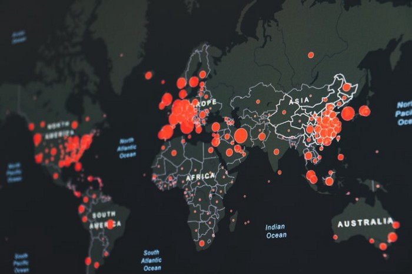

Using PyCaret, an open-source and low-code Python library that aims to reduce the time between a hypothesis and insights in Machine Learning experiments, I performed an analysis to classify fetal health to prevent infant and maternal mortality.
In this project, we created a model where it is possible to estimate the price of a health plan given the patient's characteristics.
The churn rate represents the dropout rate of your customer base. On services like Spotify or Netflix, it would symbolize the unsubscribe fee.
To learn more, visit the article below about a study I conducted on Churn Prediction for a Telecommunications company.
Credit card fraud detection is a problem that I study in this project using Logistic Regression and Decision Tree models.
Additionally, I briefly explain data balancing methods such as under-sampling and over-sampling.

I performed an analysis of the data on COVID-19, which is maintained and updated daily by the "Center for Systems Science and Engineering (CSSE) at Johns Hopkins University (JHU)".
In this analysis, the global and national panorama is observed throughout the pandemic.
In this project, we'll look at data for New York City, and see what insights can be extracted from the raw data.